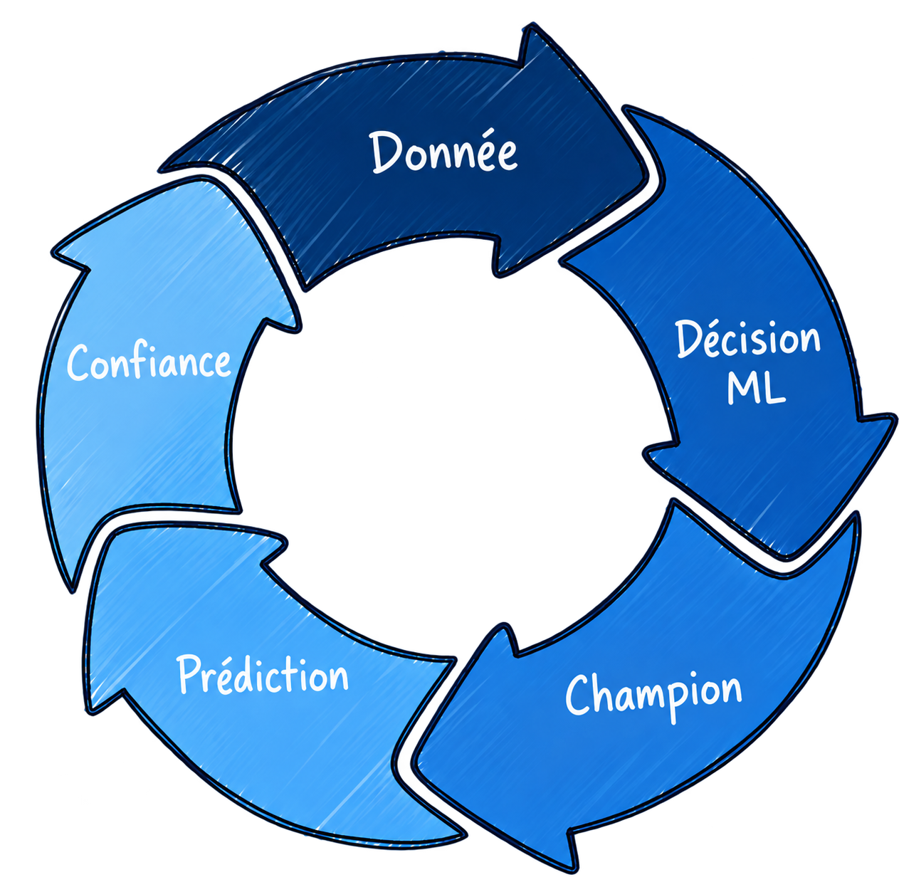

Sécurité
JWT spécialisés et responsabilités séparées.
De la donnée hebdomadaire à la prédiction, chaque transition est sécurisée, traçable et observable.
JWT spécialisés et responsabilités séparées.
DVC, digest des données et lineage du code.
PR AUC comparable et alias champion.
BentoML et reload sans interruption.
Métriques, logs, drift, performance et carbone.
